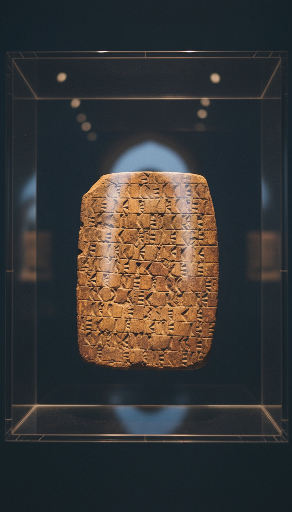

The flood story you grew up reading in Genesis was already 1,400 years old when the Hebrews wrote it down, and the original is sitting in a glass case in Bloomsbury.
Almost nobody knows this. The tablet is on public display. The translation has existed since 1872. And the parallels are not vague thematic echoes. They are line by line, object by object, bird by bird.

The Object: K.3375, Room 55, British Museum
The artifact has a catalog number. It is K.3375. It measures roughly 15.24 cm by 13.33 cm. It is a Neo-Assyrian clay tablet inscribed in cuneiform on both sides, two columns per face.
It was pulled from the ruins of the Library of Ashurbanipal at Nineveh in the 1850s by Austen Henry Layard, Hormuzd Rassam, and W. K. Loftus. Roughly 15,000 tablets came out of that dig. This one was buried in the pile until a bank-note engraver turned Assyriologist named George Smith got his hands on it in 1872.
You can walk into the British Museum tomorrow and look at it. The placard does not mention Noah.
The Translator Who Tore His Clothes Off
George Smith was self-taught. He worked at the Museum sorting fragments. In November 1872, while reading column three of K.3375, he hit a line about a boat coming to rest on a mountain, then a bird being released, then a sacrifice.
According to the eyewitness account of his colleague E. A. Wallis Budge, Smith jumped up, ran around the room, and began undressing himself in excitement. He had just realized the Babylonians wrote Noah first.
He presented the translation on December 3, 1872, to the Society of Biblical Archaeology in London. The Prime Minister William Gladstone was in the audience. The Daily Telegraph funded Smith to go back to Nineveh to dig for the missing fragments. Victorian London understood immediately what this meant.
The Twelve Parallels, One by One
The flood hero in Tablet XI is named Utnapishtim. The god Ea warns him in secret to build a boat. That is parallel one.
The boat is sealed with bitumen, the same waterproofing material Genesis 6:14 specifies for Noah's ark using the Hebrew word kopher. That is parallel two. The vessel carries his family and pairs of every living creature. That is parallel three.
The storm rages. Utnapishtim's boat comes to rest on a mountain, named Mount Nimush in the Akkadian text, paralleling Genesis 8:4 and Ararat. He releases a dove, which returns because it finds no resting place. He releases a swallow, which returns. He releases a raven, which does not return because the waters have receded. He disembarks and offers a sacrifice. The text says the gods smelled the sweet savor and gathered like flies around the offering. Genesis 8:21 says Yahweh smelled the sweet savor.
The gods smelled the sweet savor and gathered like flies. That sentence was carved into clay 1,400 years before a Hebrew scribe wrote the identical line about Yahweh in Genesis 8:21.
The Dates Make the Direction of Borrowing Impossible to Reverse
The Standard Babylonian version of Gilgamesh on Tablet XI was compiled by the scribe Sin-leqi-unninni around 1200 BCE. The story itself is older. The Sumerian flood narrative of Ziusudra goes back to roughly 2000 BCE. The Atrahasis epic, tablet K.3399 in the same museum, dates to around 1700 BCE and contains the same flood architecture.
The Hebrew Bible was not composed in its current form until after the Babylonian Exile in 586 BCE. That is the historical moment when Judean elites were physically deported to Babylon and lived for roughly seventy years inside the very civilization that had been telling the flood story for over a millennium.
The Assyriologists W. G. Lambert and A. R. Millard published the definitive Atrahasis edition in 1969. Stephanie Dalley's Oxford translation in 1989 made the parallels accessible to general readers. None of this is fringe scholarship. It is the consensus in every secular Near Eastern studies department on earth.
What the Victorian Church Did Next
The initial reaction in 1872 was panic. Then came a reframing. Apologists argued that the similarity proved the flood actually happened, and that both cultures were remembering a real event.
That argument has a problem. It does not just explain shared memory of a flood. It has to explain why the bird sequence is identical, why the bitumen is identical, why the mountain landing is identical, why the sacrifice and the gods smelling the offering use nearly identical phrasing. Shared memory does not produce twelve matching narrative beats in the same order.
The simpler explanation is the one Hermann Gunkel proposed in 1895 in his book Schopfung und Chaos. The Hebrews inherited the story during or after the Babylonian Exile and rewrote it with their own theology bolted on. Polytheism became monotheism. The capricious gods became one covenant-keeping God. The skeleton stayed.
Why You Were Not Told
The translation has existed for 153 years. The tablet has been on public display in London for most of that time. Every seminary teaches some version of the comparative material. It does not filter down to the pulpit.
The reason is structural. A pastor cannot stand up on Sunday and say the Genesis flood narrative was edited from a Babylonian source without losing half the room. So the information stays inside academic journals and museum placards that nobody reads carefully.
The British Museum object page for K.3375 describes it in clinical language. It calls the parallels significant. It does not say the words plagiarism or inheritance. It does not need to. The tablet does the talking.
Tablet XI is still in Room 55. Tablet K.3399, the Atrahasis flood narrative, is in the same building. The Sumerian Ziusudra fragment is in the University of Pennsylvania Museum of Archaeology and Anthropology, catalog number CBS 10673. Three independent flood tablets, all older than Genesis, all telling the same story with the same hardware.
If God revealed the flood to Noah, He revealed it to the Sumerians first, in cuneiform, with the same bird sequence and the same bitumen and the same mountain. Or the Hebrew scribes did what every ancient culture did when it lived under a larger empire. They borrowed.
The tablet is sitting there. The catalog number is K.3375. Go look at it. Then tell me which explanation your Sunday school teacher gave you, and which one matches the clay.
Books that informed this investigation
- The Sumerians (Kramer)
- Babylon: Mesopotamia and the Birth of Civilization (Kriwaczek)
- The Ancient Near East (Hallo & Simpson)
As an Amazon Associate, Hidden Epoch earns from qualifying purchases. Cost to you: nothing.
Research safely
The VPN we use to research without being tracked. First 3 months free.
Get NordVPN →